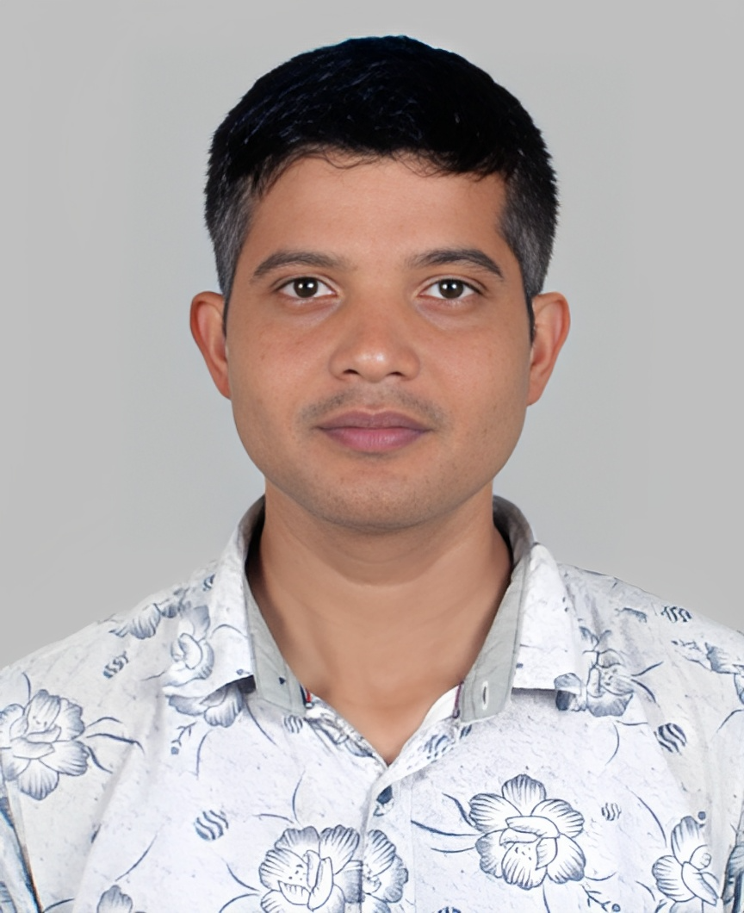

Specializing in nanomaterials synthesis, waste-derived functional carbons, and physicochemical characterization. Currently driving sustainable materials innovation at the Nepal Academy of Science and Technology (NAST).

Conduct materials synthesis and physicochemical characterization. Support national research projects focused on sustainable materials and waste-derived functional carbons. Assist instrumentation-based training and laboratory coordination.
Delivered undergraduate lectures and laboratory sessions in materials-related courses, curriculum development and student mentoring.
Physicochemical properties of hydrothermally grown ceramic nanoparticles on activated carbon derived from waste materials. Supervised by Prof. Dr. Hem Raj Pant.
Development of activated carbon from agricultural waste (Bayer seeds, pistachio shells) for water treatment and energy storage. Decoration with ZnO nanorods for enhanced methylene blue removal.
Synthesis and characterization of activated carbon from Ziziphus mauritiana seeds for supercapacitor electrodes. Presented at IOE Graduate Conference 2021.
Investigating impregnation ratio driven transition from activated carbon to ZnO-rich products during chemical activation of pistachio shell (under review in Biomass Conv. Biorefinery).
Collaborative DFT-assisted spectroscopic characterization and ML-driven reactivity analysis of brominated sulfonamide and 4-aminobenzoate (manuscripts in peer review).
Shrestha, P.; Jha, M. K.; Ghimire, J.; et al. Materials, 13(24), 5667.
View DOI →Ghimire, J.; Jha, M. K.; Shah, D.; Pant, H. R.; Joshi, S. IOE Graduate Conference 9, 231-236.
Shah, D.; Ghimire, J.; Karki, B.K. Journal of the Indian Chemical Society (Elsevier).
Neupane, B.; Basnet, K.; Ghimire, J.; Dhungel, S. K. Journal of Cheminformatics (Springer).
Neupane, B.; Ghimire, J.; et al. Discover Applied Sciences (Springer).
Ghimire, J.; Neupane, B.; Budha, C.; Shah, D. Biomass Conversion and Biorefinery (Springer).
Tribhuvan University, Pulchowk Campus | 2018 – 2020
★ First position among all Master's students (2018–2020)Tribhuvan University, Thapathali Campus | 2011 – 2015
Global Navigation Satellite Systems (GNSS) | Jan-Feb 2025
Financial and Administrative Excellence | Oct 2024
NAM S&T Centre & NAST | May 2025
Virtual | Nov 12, 2025
Institute of Engineering, Tribhuvan University
Applied Science & Chemical Engineering
Former Chief Technical Officer, Faculty of Technology, NAST
skdhungel@hotmail.com